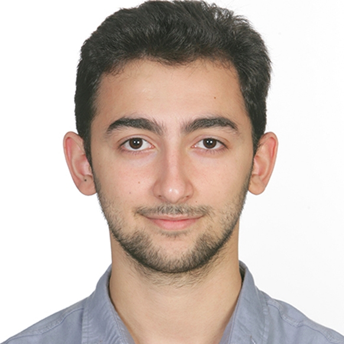

Matin Huseynzade

Personal Website
I am Matin Huseynzade, a computer engineering student aspiring to specialize in the fields of neuroscience and artificial intelligence. Over the course of 7 years, I have developed expertise in diverse areas of computer science, including web development, cybersecurity, heterogeneous parallel computation systems, machine learning, and open-source software. Furthermore, I have been actively involved in volunteer work, such as translating for Khan Academy Azerbaijani, participating in university communities, and serving as chairperson in the IZTECH IEEE Computer Society for a school year. Currently, I hold positions as both a board member and a project manager at the Azerbaijani Neuroscience Society.
Contact
You can contact me through the following:
- Email: matinhuseynzade@gmail.com
- Linkedin: Professional Portfolio
I host my software projects in GitHub. You can find my photo gallery on Flickr. Additionally, I have a Youtube channel, Texnobil, which features scientific content in the Azerbaijani language.